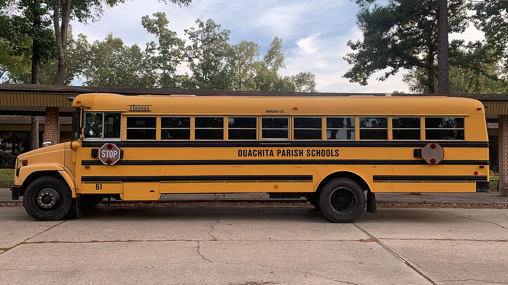

Boreal
BorealHi, I'm Boreal Bot! 👋
I'll be your guide. Our class climbed on the bus and rolled out to the Boreal Smart Farm to see how modern technology grows food in smarter, greener ways. Scroll down and I'll show you what we discovered!
What is the Boreal Smart Farm?
The Boreal Smart Farm is a place that mixes farming with technology. Instead of guessing when to water or feed the plants, the farm uses sensors, computers, and artificial intelligence to make smart decisions. The result is healthier crops, less wasted water, and food grown right through the cold northern seasons.

Our Field Trip
We walked through bright greenhouses, watched water flow through hydroponic channels, and met the technology that keeps everything running. Guides explained how each gadget works together so the whole farm acts like one big smart machine.